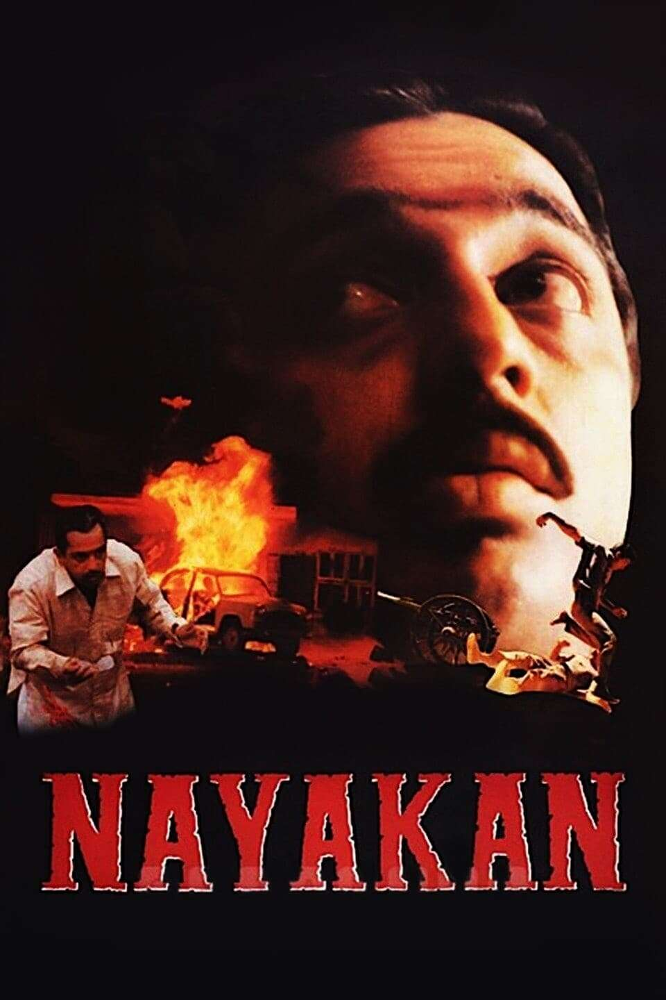

Movie Showcase
The Godfather (1972)
Spanning the years 1945 to 1955, a chronicle of the fictional Italian-American Corleone crime family. When organized crime family patriarch, Vito Corleone barely survives an attempt on his life, his youngest son, Michael steps in to take care of the would-be killers, launching a campaign of bloody revenge.
Francis Ford Coppola's The Godfather is renowned for its masterful use of chiaroscuro lighting, which creates dramatic shadows and highlights the moral complexities of the characters. The film's slow zoom-ins are a signature technique that intensify pivotal moments, particularly in scenes showcasing Michael Corleone’s transformation. Coppola’s wide framing in family gatherings underscores the Corleone family's influence and tradition, while the deliberate use of long takes adds a sense of realism and gravity to the storytelling.
“I'm gonna make him an offer he can't refuse.” — Don Vito Corleone

Nayakan (1987)
Velu Naicker, who witnesses the brutal murder of his father, kills a corrupt policeman and escapes to Mumbai, only to become a gangster.
In Nayakan, Mani Ratnam employs dynamic camera angles and long takes to immerse viewers in the gritty world of the protagonist. The film’s use of handheld camerawork adds a sense of realism and urgency, particularly in intense action sequences. Ratnam also utilizes low-angle shots to emphasize the power and dominance of characters, while tight framing on faces captures the emotional depth of pivotal moments, enhancing the film’s dramatic impact.
“Neenga nallavara kettavara"
